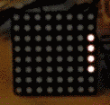
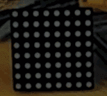
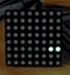

Purpose
Use the RGB led matrix bought for 5 USD on eBay the other day. Using the board special for the Atmega64a
Rapide64a and show time, temperature, random display, ... whatever crosses your mind.
The design is not bad (quite happy
Code
Google code SVN as usual :
http://code.google.com/p/alanarduinotools/source/browse/trunk/#trunk%2FAtmegaxxA%2FRGBMatrix
I designed it to be interruption based: you have a memory buffer (one per color) that you update at your will, and the "show" routine is called every x ms to paint current buffer display. We're talking a 8x8 dot matric so no "wait for vsync" or things like that involved. Just look at the code, it's simple to add any image logic you want without caring of how to display it...
Pictures
Showing time every minutes ...
 Star field
 Snake (changes color each time it bounces walls)
XXX Drops
XXX Random patterns